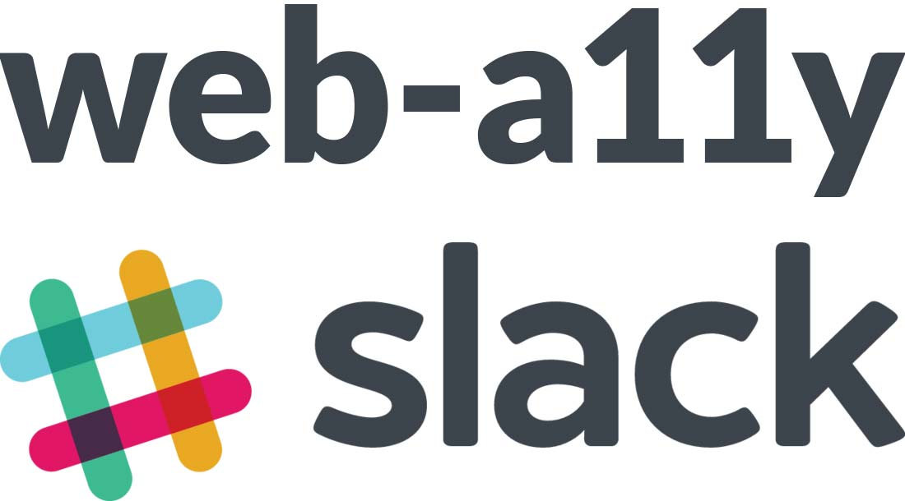
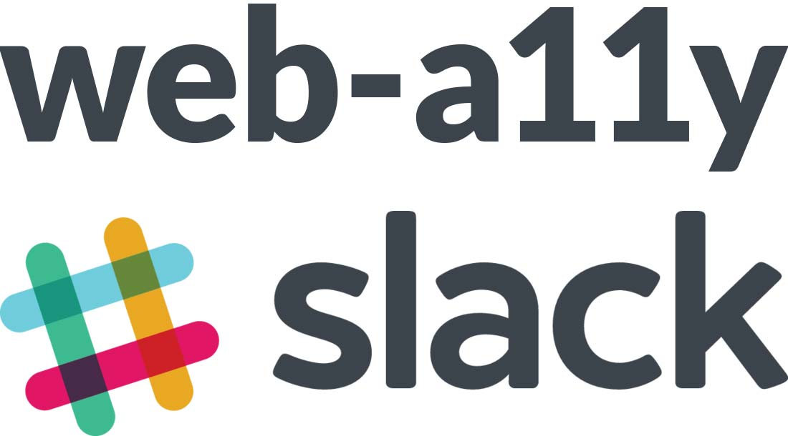

Who is Marcy Sutton?
 

Sunrise in the mountains with a container of homemade berry pie
Marcy presenting Empathy Driven Development at Uphill Conf in Switzerland, with a split screen for her VS Code "slides" and the conference sponsors
New!
Modern Sole Design, LLC
You can consult with me for:
- Accessibility design reviews
- UI Prototyping & Engineering
- Manual and automated testing
- Documentation
- Talks / break & learns
- Workshops & training
- Office hours
TODAY
- Disability and Accessibility Communities
- Laws and Guidelines
- Working in Accessibility and the Mainstream
- Testing often for user impact
- Accessible doesn’t mean boring
Why do you care about accessibility?
I care about people.
In the US,
- Statistics published by the
1 in 4 adults
has some type of disability.
Centers for Disease Control and Prevention
TheDisability Spectrum
Including, and not limited to:
Your life could change at any time.
Microsoft Inclusive Design Toolkit
http://bit.ly/microsoft-inclusive-toolkit
1. Disability and accessibility communities are not always the same
Tweet from Matt May that reads: "Accessibility pro tip: If your timeline is not flooded with "Bran has a wheelchair!" tweets, you are following accessibility Twitter and not disability Twitter. Consider branching out. (Or possibly your friends don't watch GoT. But that's way less likely.)
Tweet from Imani Barbarin, "Crutches and Spice" that reads: "#AdaptTheFeed is about saying enough is enough. Disabled people saw how quickly the things we have been calling for were made available now that nondisabled people needed them." "We want change now. You can commit to accessibility outside of a pandemic too, you know?"
“#AdaptTheFeed is for the disability community and anyone committed to disability representation and inclusion.”
“Disabled people find themselves adapting to an inaccessible society constantly. So, now it’s your turn to adapt your content and social media feed to not only accommodate disabled people, but elevate our voices and include us in your work.”
-Imani Barbarin
Tweet from EJ Mason that reads: "Me: “Accessibility is so draining. I need to find rituals that help me de-stress and turn off my work brain™. I know: I’ll order myself delivery!” Me, 5 minutes later: “DoorDash says keyboard users can get fucked, I guess.”
Accessibility is about supporting Disabled people first and foremost
“What disables people are the barriers that society creates for people with impairments”
- Alliance for Inclusive Education
Listen to diverse perspectives on #DisabilityTwitter
and not just #A11y
2. Laws and Guidelines
Wikipedia: National Federation of the Blind v. Target Corp.
The ADA and Section 508
Enforcing users’ civil rights in the United States
Global Accessibility Requirements
- Accessible Canada Act
- EU Accessibility Directive
- Australia Disability Discrimination Act
- Brazil Modelo de Acessibilidade de Governo Eletrônico
- Equality Act in England, Scotland and Wales
- India Rights of Persons with Disabilities Bill
- Norway Anti-discrimination Accessibility Act
- Israeli Standard 5568
Learn more from Lainey Feingold
Web Content Accessibility Guidelines (WCAG) version 2.0
WCAG 2.0
- Perceivable
- Operable
- Understandable
- Robust
Web Content Accessibility Guidelines (WCAG) version 2.2
About WCAG versions
- WCAG 2.0 was published on 11 December 2008.
- WCAG 2.1 was published on 5 June 2018.
- WCAG 2.2 is scheduled to be published in 2021.
Learn more from the W3C Web Accessibility Initiative
Rover.com with Accessibility Insights FastPass open
Rover.com with Accessibility Insights FastPass open and a pink arrow pointing to WCAG 1.4.3 for a color contrast violation
Understanding WCAG SC 1.4.3: Contrast (minimum)
Manual Matuzovic: Building the most inaccessible site possible with a perfect Lighthouse score
Eric Bailey on Smashing Magazine: The Importance Of Manual Accessibility Testing
https://www.smashingmagazine.com/2018/09/importance-manual-accessibility-testing/
3. Working in Accessibility or the Mainstream
Accessibility Companies
- Specialized products & services
- Valuable internal knowledge
- Company alignment on accessibility
- Roles potentially less competitive
- SMEs feel their dev skills atrophy
- It’s a small world.
The Mainstream
- Wider reaching products/services
- Internal specialists, teams, or volunteers?
- Company size, type, and culture can affect impact
- Less company alignment on accessibility
- Working though friction with carrots and sticks
What do you want to do with your career?
What are your values?
No matter what:
- Accessibility skills are highly employable
- You can try different roles over time
- Ask about salary ranges and levels
- Talk to people who’ve worked at the company
- Do work you can believe in with people you trust
Bonus questions for you to steal
Things to ask people who’ve worked at a company you’re considering for an accessibility role. Use your best judgement based on their role/relationship to you (hiring manager, colleague/acquaintance, current or former employee, etc.)
- How are accessibility-impacting decisions made?
- How does accessibility fit into your roadmap/process?
- How are Disability representation and diversity at the company?
- What’s the path to promotion like for this role?
- What do you like about working there?
- What’s your least favorite part?
- What kind of friction do you encounter in your job?
4. Testing often for user impact
We can remove barriers by making accessibility part of our web design and development workflow.
Make it part of your Definition of Done
Forem New Pull Request page on GitHub
Supporting users
- Start with accessibility basics
- Use browser extensions and testing tools
- Zoom and magnify layouts
- Test with assistive technology
- Bake accessibility into automated tests
- Actually test accessibility use cases
Take the no-mouse challenge

Test with Screen Readers
http://webaim.org/articles/screenreader_testing
- Windows: NVDA & Firefox
- OSX, iOS: Safari & Voiceover
- Android: TalkBack & Firefox
Hire people with disabilities to join your team.
You can also work with:
- Fable
- Access Works
- + Groups local to your area
And remember: You are not the user
Lack of representation leads to incorrect assumptions about what’s safe or intuitive
5. Accessible doesn’t mean boring
But simpler is often better
Accessibility Wins showcasing the A11y Project Redesign
Simplicity is intuitive

Ambiguous visual icons
Cognitive complexity in Instagram
There are established
UI patterns
https://www.w3.org/TR/wai-aria-practices/
Prototype designs with code for accessibility
Save costs long-term by finding out what will be the most successful up front.
Consider input modalities in software architecture
Programmatic state changes instead of jQuery-style bound events can more easily enable:
- Mouse pointer
- Keyboard
- Touch
- Speech
- Motion
- Changes in ambient light
It’s about
User Experience.
Let’s make it better.
Accessibility Resources
- A big ole resource list
https://marcysutton.com/web-accessibility-resources - Smashing Magazine Accessibility Workshop - Nov. 2020
https://smashingconf.com/online-workshops/workshops/marcy-sutton-nov - Accessibility for Web Designers
http://webaim.org/resources/designers/ - BBC Mobile Accessibility Guidelines
http://www.bbc.co.uk/guidelines/futuremedia/accessibility/mobile - Research on Accessible Client-side Routing
https://www.gatsbyjs.com/blog/2019-07-11-user-testing-accessible-client-routing/ - Accessibility Wins Tumblr
https://a11ywins.tumblr.com